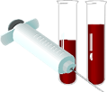

כאבי ראש
כאבי ראש נפוצים מאוד בקרב כלל האוכלוסייה, קיימים כמה סוגי כאבי ראש בניהם המיגרנה היא הנפוצה ביותר.
כאבי ראש עקב מתח:
- כאבים מסוג זה שכיחים ודומים בתחושתם למיגרנה.
- מופיעים בהתקפים שיכולים להמשך שעות ואף ימים.
- הכאב מופיע בד"כ מעל העניים, מאחורי הראש או בצדי הראש
מומלץ
להפחית את המתח בעזרת פעילות מרגיעה, שתיית תה צמחים והפחתת הגורם המלחיץ, עבודה וכו'.
כאב ראש מקבצי:
- נפוץ בעיקר אצל גברים .
- התקפים שנמשכים בין כמה דקות לכמה שעות, מספר פעמים ביום.
- לרוב מופיעים בעונות מעבר.
- בעת ההתקפים קיימים לפעמים תסמינים נוספים כגון רגישות לאור.
מומלץ
לכבות את המחשבים והסלולר לשכב בחושך להירגע וכמובן לשתות תה צמחים.
מגרנות:
מיגרנה כאב הראש השכיח ביותר, המיגרנה נפוצה בעיקר אצל נשים, ההתקפים מתחילים בגילאי 10-30 ונמשכים עד גיל 50.
סמפטומים
- כאב ראש חזק ופתאומי הפוגע בצד אחד או בשני צידי הראש.
- הכאב נמשך מספר שעות או ימים.
- עלול ללוות בבחילה, רגישות לאור וסימפטומים נוספים.
גורמים
לחץ נפשי, צריכה מופרזת של קפאין ואלכוהול, מחסור בשינה, חוסר איזון הורמונלי, הפרעות במערכת העיכול, חסרים תזונתיים, נשימה לא נכונה, כאסים מודחקים ורמות נמוכות של סוכר או אבץ בדם.
מומלץ
- להפחית מתח נפשי.
- לעשות בדיקות דם לבדיקת חוסרים ואיזון הורמונלי.
- לבחון בעיות נוספות כגון בעיות במערכת העיקול.
- להפחית או להפסיק צריכת קפאין ואלכוהול ולשתות תה צמחים.
עשה ואל תעשה
טיפול תזונתי
- לשתות הרבה מים
- ארוחות קטנות ורבות במהלך היום
- צריכת סידן ומגנזיום
- לצרוך סיבים תזונתיים מפרות וירקות
ממה להמנע
- אלכוהול לסמים
- קפאין
- ממתקים וסוכרים
- מזונות מטוגנים
- מזונות המכילים טרמין